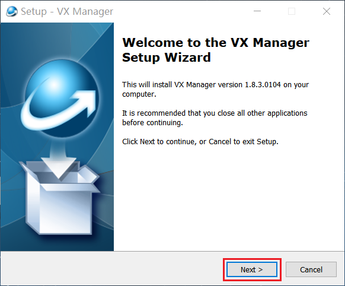
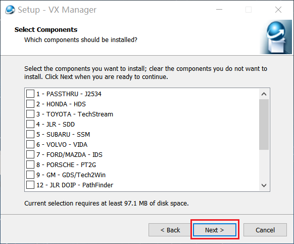
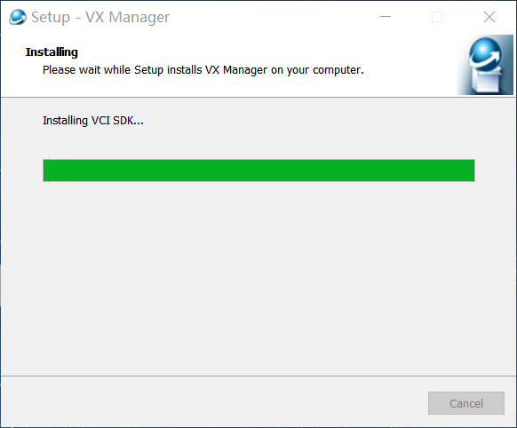
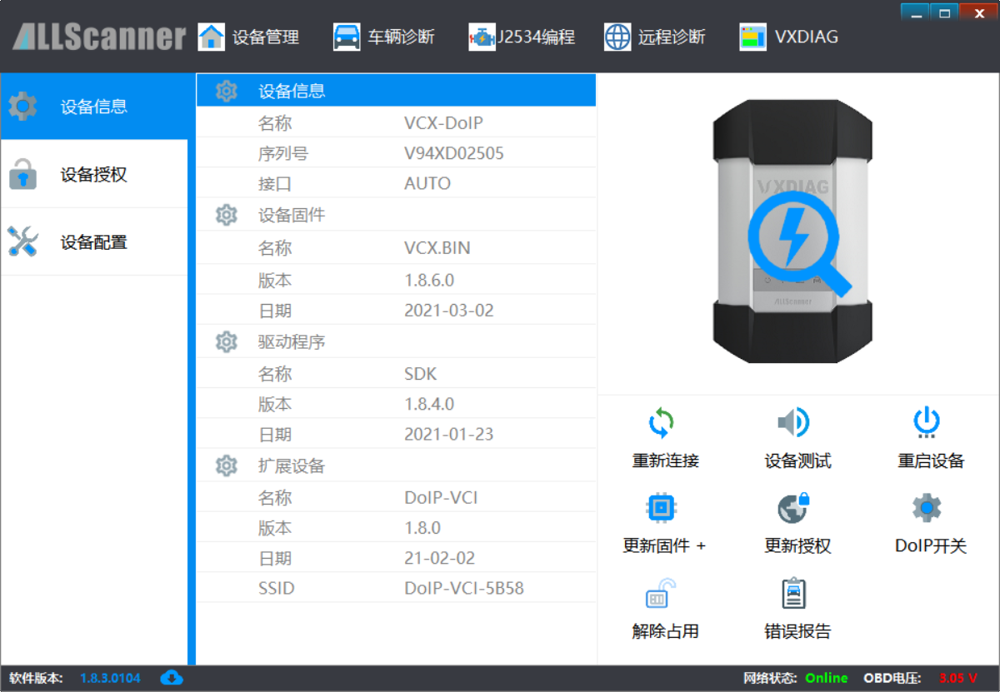
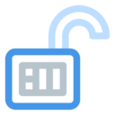
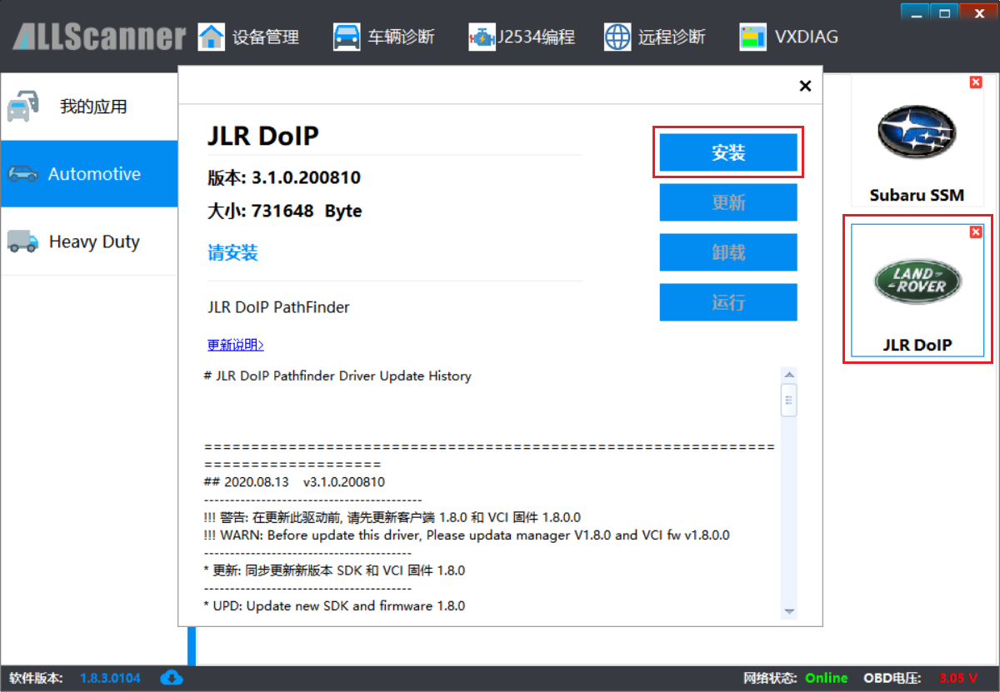
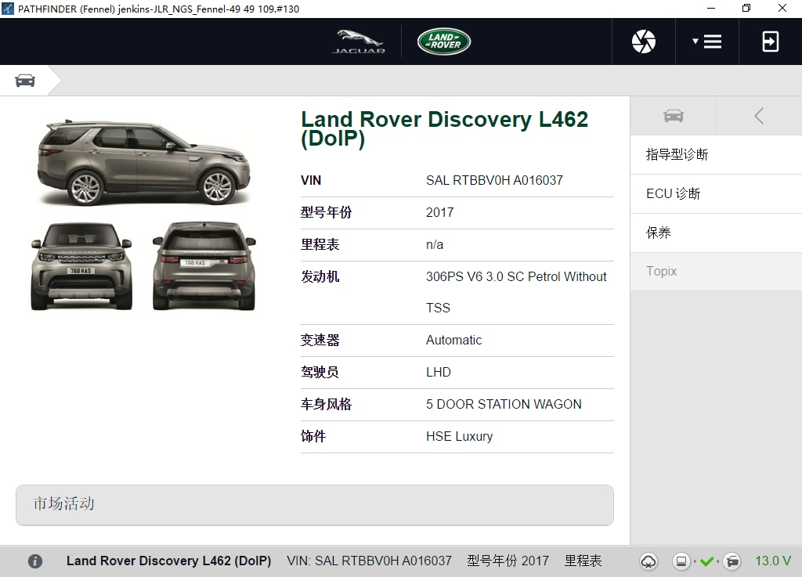

Obter o Instalador
Antes de iniciar o diagnóstico com o dispositivo, o PC deverá ter o VCI Manager e os drivers instalados. O instalador está incluído no CD-ROM do produto ou pode ser transferido nos seguintes links:
http://www.m-auto.com
http://www.vxdiag.net/#download
Requisitos de Instalação
- Processador: 1.6 GHz ou mais rápido.
- Memória RAM: DDR 4 GB ou superior.
- Disco rígido: 80 GB ou superior.
- Interface de rede: LAN 100/1000 Mbps.
- Interface de comunicação: USB 2.0 ou USB 3.0.
- Rede sem fios: 802.11a/b/g/n WiFi.
- Sistema operativo: Windows 10 / 8 / 7.
- Browser: Internet Explorer 11 ou superior.
O componente DoNet de Diagnóstico Remoto requer o Internet Explorer 11 ou superior.
O Windows 7 necessita de atualizar o IE para a versão mais recente.
Transferir Internet Explorer 11 (32 bits)
Transferir Internet Explorer 11 (64 bits)
Atenção: o Windows XP já não é suportado!
Passos de Instalação
Durante a instalação, desactivar o Windows Defender ou outro software antivírus!
1. Executar o Instalador
Clique duas vezes para executar o instalador do VCI Manager.

2. Iniciar a Instalação
Ecrã de boas-vindas, clique em [Next] para continuar.

3. Seleccionar Componentes
Pode seleccionar os drivers de diagnóstico OEM a instalar ou instalá-los posteriormente através do VCI Manager.

4. Instalação em curso
O processo de instalação pode demorar alguns minutos. Aguarde.

5. Instalação Concluída
Ecrã de conclusão, clique em [Finish] para terminar.

Após a instalação, será criado um atalho do VCI Manager no ambiente de trabalho e no menu Iniciar.

Ligar Dispositivo e Veículo
Exemplo com dispositivo M-Auto VCI DoIP ligado via USB. Certifique-se de que a ligação está correcta:
- Ligue o cabo DB26-OBD do dispositivo ao veículo.
- Ligue o cabo USB Tipo-B do dispositivo ao PC.

 Mais modos de ligação Saiba mais sobre os diferentes modos de ligação dos dispositivos da série M-Auto VCI
Mais modos de ligação Saiba mais sobre os diferentes modos de ligação dos dispositivos da série M-Auto VCIUtilização da Ferramenta M-Auto VCI Manager
Inicie o VCI Manager. Se o dispositivo estiver ligado correctamente, será apresentada a seguinte informação:

Funções Básicas
- [Reconectar] ── Reconecta o dispositivo e actualiza as informações.
- [Teste do Dispositivo] ── Auto-teste do dispositivo com piscar de LED e sinal sonoro.
- [Reiniciar Dispositivo] ── Repõe e reinicia o dispositivo.
- [Actualizar Firmware] ── Transfere e actualiza o firmware do dispositivo online.
 [Actualizar Licença] ── Transfere e actualiza os dados de licença online.
[Actualizar Licença] ── Transfere e actualiza os dados de licença online.- [Activar/Desactivar DoIP] ── Activa ou desactiva o protocolo DoIP para testar comunicação DoIP do veículo.

[Libertar Ocupação] ── após ocupação manual do dispositivoLibertar Ocupaçãolibertar o dispositivo。- [Relatório de Erros] ── Visualiza e obtém o registo de erros do dispositivo.
 [Verificar Actualizações] ── Verifica se há actualizações disponíveis para o VCI Manager.
[Verificar Actualizações] ── Verifica se há actualizações disponíveis para o VCI Manager.
Instalar Driver de Diagnóstico OEM
Abra [Diagnóstico do Veículo]->[As Minhas Aplicações] clique na aplicação de diagnóstico a instalar [JLR DoIP]，no ecrã de informação do driver, clique em [Instalar] para concluir a instalação do driver.

Iniciar Diagnóstico
Abra o software JLR Pathfinder; este irá detectar automaticamente as informações do veículo. O resultado do diagnóstico é o seguinte:
